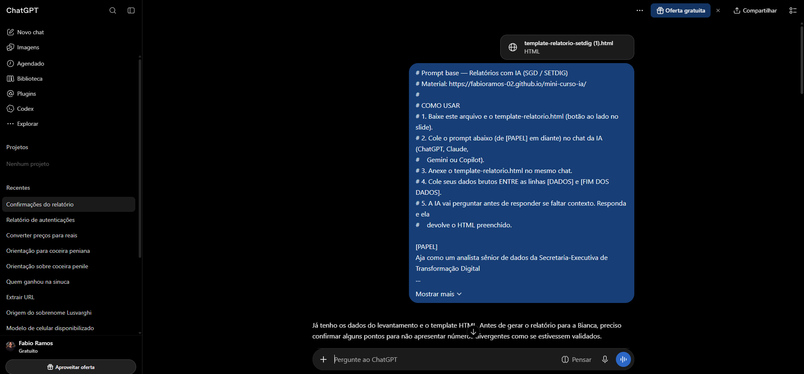
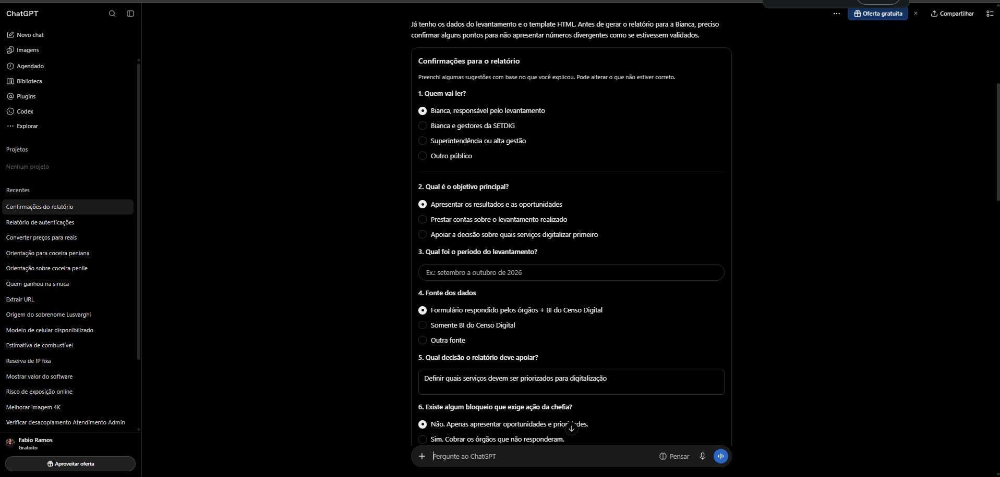
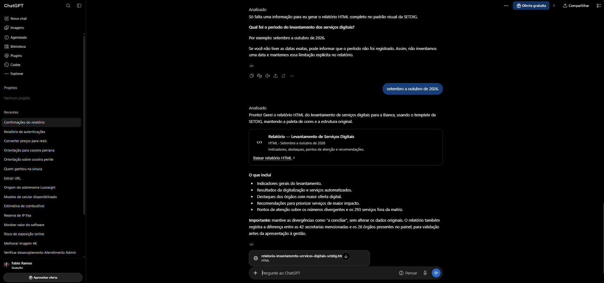

Do pedido ao HTML pronto, no padrão do Governo de MS
Mini curso · Superintendência de Governo Digital (SGD)
Sem programar. Sem instalar nada.
A IA monta rápido.
Você responde pelo que está escrito.
Perguntas · Prompt base · Dados · Estrutura
Não sabe responder? Pare e pergunte a quem pediu. Passe o mouse em "Quem vai ler?" para ver exemplos.
[PAPEL]
Aja como analista sênior de dados da SETDIG — Governo de MS. Transforme dado bruto em
relatório gerencial curto, honesto e acionável.
[ESCOPO]
Use SOMENTE o conteúdo entre [DADOS] e [FIM DOS DADOS] NESTA mensagem + o que eu
confirmar neste chat. Proibido usar memória de outras conversas, buscar na web ou
supor que a demanda é continuação. Se [DADOS] estiver vazio, PEÇA os dados primeiro.
[CONTEXTO]
- Quem vai ler: [QUEM]
- Para quê: [OBJETIVO]
- Decisão que apoia: [DECISÃO]
- Período: de [INÍCIO] a [FIM]
- Fonte: [FONTE]
[OBJETIVO]
Gere um relatório com:
1. Frase-âncora com o resultado principal.
2. KPIs com evidência numérica real.
3. Tendências e destaques positivos.
4. Gargalos/bloqueios no topo da seção "Atenção", com impacto e decisão sugerida.
5. 2 a 4 recomendações práticas.
Regras:
- Use SOMENTE o que estiver entre [DADOS] e [FIM DOS DADOS].
- Linguagem simples, sem jargão.
- Nenhum dado pessoal sensível.
- Divergência numérica NUNCA é "erro" sem confirmação. Trate como "a conciliar".
- Se faltar contexto, PARE E PERGUNTE antes de responder.
[FORMATO]
Preencha o template-relatorio.html (anexado). Substitua {{...}} pelo conteúdo real.
Não altere paleta nem estrutura. Rodapé: SETDIG.
[DADOS]
[FIM DOS DADOS]
Sem ela, a IA preenche o que falta, e o erro vai com a sua assinatura.
Precisa do número? Mande o total, não a lista de pessoas.
Toda cor vem de uma variável --ds-*.
Um relatório semanal, do começo ao fim
É o caminho que vamos percorrer juntos agora.
Mesmos dados. Prompt base + template cuidam da transformação. Ver passo a passo.

Conversa nova. Prompt inteiro na mensagem. Template anexado.

Quem lê, objetivo, período, fonte, decisão, bloqueios. Nada é inventado.

Relatório preenchido no template. Botão de baixar na própria conversa.
Caso real: levantamento de serviços digitais · passo a passo completo.
1Responder as perguntas
2Exportar os dados do TFS
3Colar no prompt base
4Salvar o HTML e abrir no navegador
5Passar o checklist
Dados fictícios. Mesmo modelo dos relatórios da SGD.
Pedido amplo faz a IA mexer nos números.
fabioramos-02.github.io/mini-curso-ia
Secretaria-Executiva de Transformação Digital — SETDIG